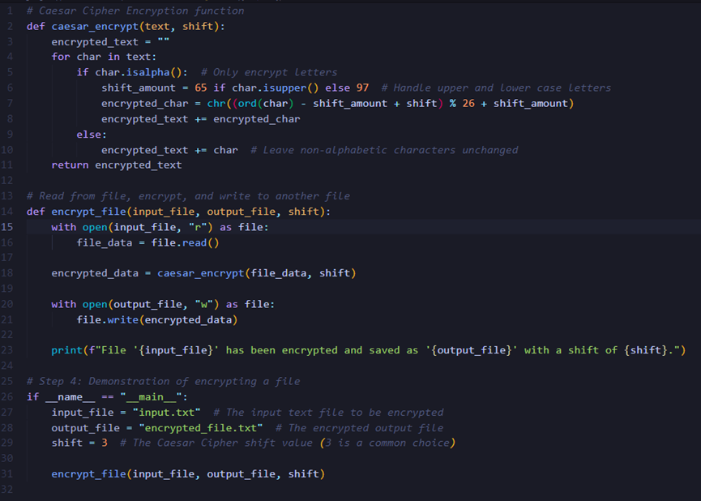
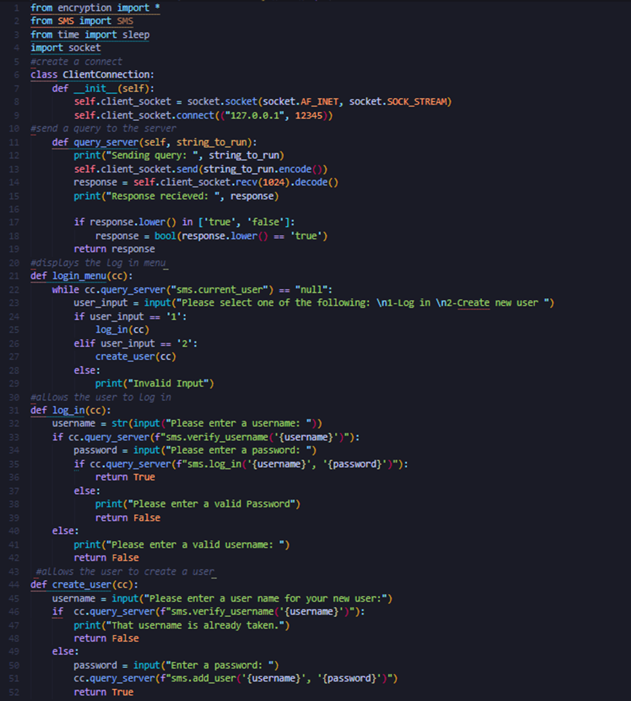
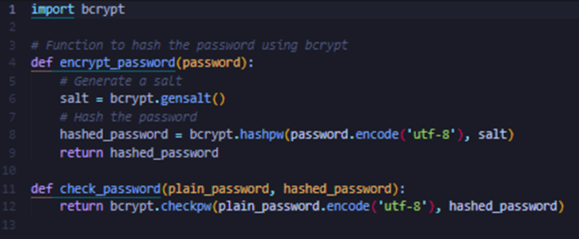

Discussion Topic:
TrueCrypt has been found to be insecure due to several security issues. This post shall highlight these issues and the potential risks they pose to users. In the article TrueCrypt cryptanalysis by Junestam & Guigo (2014) they highlight that 11 vulnerabilities were discovered within the software. These risks ranged from low severity to medium severity such as a weak key derivation algorithm and potential leakage of sensitive information from kernel stacks. These vulnerabilities indicate that TrueCrypt does indeed have unfixed security issues.
However, the audit (Junestam & Guigo, 2014) did not find any backdoors or intentional security flaws, and many of the issues seem to be fixable bugs rather than critical security holes. The weaknesses, such as outdated cryptographic algorithms demonstrate that the software may be vulnerable to brute force attacks and information leaks. Although this could be expected due to updates being discontinued in 2014.
Given the findings in the report, I would not recommend TrueCrypt as the most secure storage option without reservations, especially since even its developers say not to use it.
If I were to recommend it with caution, I would add the following caveats:
•The system uses outdated cryptography meaning it is easier to do a brute-force attack.
•The software has known vulnerabilities, such as integer overflows and data leakage issues that remain unresolved.
•TrueCrypt is no longer maintained, so any new vulnerabilities discovered will not be fixed.
When looking at the TrueCrypt webpage (TrueCrypt, 2014) there is warning about its vulnerabilities to me this indicates that it should only be used and recommended with extreme caution as it could run a security risk for others.
References:
Junestam, A. & Guigo, N. (2014) Open Crypto Audit Project TrueCrypt: Security Assessment.
TrueCrypt (2014) TrueCrypt. Available from: https://truecrypt.sourceforge.net/ [Accessed October 1st, 2024].
Ontology design
This design organizes TrueCrypt’s weaknesses based on their severity and shows how different user goals may be affected by each weakness.
1. Medium Severity Issues
Weak Volume Header Key Derivation Algorithm: TrueCrypt uses a weak key derivation algorithm, making it easier to brute-force passwords. This is a serious issue for users encrypting highly sensitive data, like bank details.
Sensitive Information Paging: Sensitive information, like encryption keys, can be written to disk during low memory situations if the system disk is not encrypted. This would be an issue for users who haven’t encrypted their disk.
Bootloader Decompressor Issues: The bootloader has weaknesses like out-of-bounds reads, which could be exploited by attackers with physical access to the disk.
Improper Memory Wiping: TrueCrypt uses the memset() function to clear sensitive data in some cases, but this can be optimized out by the compiler, leaving data in memory.
2. Low Severity Issues
Kernel Pointer Disclosure: TrueCrypt leaks kernel pointers, which can help attackers bypass security mechanisms like ASLR.
Integer Overflow in Disk Verification: An integer overflow could allow a denial-of-service (DoS) attack, causing the system to crash or malfunction.
Information Leakage in IOCTL_OPEN_TEST: Local attackers could exploit weak access control to learn details about files.
Cryptography Programming Exercise:
Here’s a Python program that reads a text file, applies Caesar Cipher encryption with a shift of 3, and saves the encrypted output to another file.
Why Did I Select the Caesar Cipher Algorithm?
I chose Caesar Cipher because it is one of the simplest and most well-known encryption techniques and it is a technique I have some familiarity with. The key reasons for choosing Caesar Cipher:
Simplicity: It is easy to understand and implement, making it accessible. The concept of shifting characters by a fixed number of positions in the alphabet provides a basic understanding of how encryption works without getting into something more complex.
Demonstration Value: The Caesar Cipher helps illustrate the fundamental concept of encryption (transforming plaintext into ciphertext based on a key).
Would It Meet GDPR Regulations?
No, the Caesar Cipher would not meet GDPR regulations for protecting sensitive data.
The Caesar Cipher is insecure by modern standards because it can be easily broken using simple techniques like frequency analysis or brute force. With only 25 possible shifts (ignoring the shift of 0), an attacker can quickly try all possibilities and decrypt the message. GDPR expects encryption to be robust against attacks.
GDPR recommends the use of modern cryptographic standards for encryption because they offer a high level of security. These algorithms are tested against various attack vectors and are widely trusted by security professionals.

Project update:
This week was mainly spent creating functions. I managed to create the encryption.py file by using Bcrypt. This should encrypt the users’ passwords. I also added in the log in and create account screen. Screenshots below:

